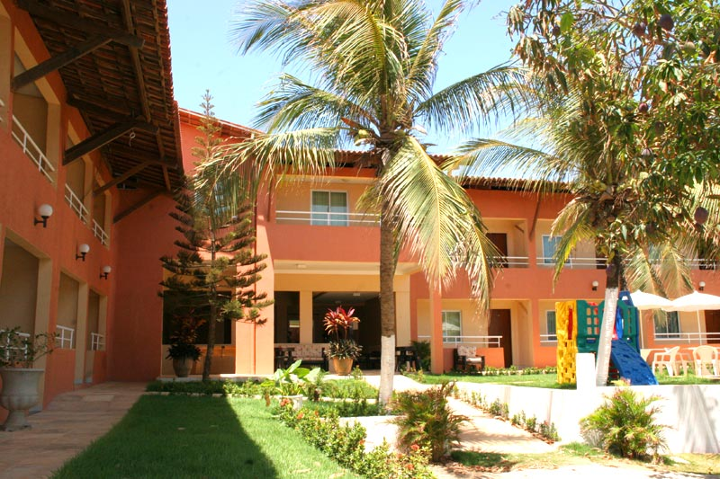

Localizada a 100 metros do Beach Park, uma pousada e hotel Porto das Dunas oferece todo o conforto dos grandes hotéis e o aconchego de uma pousada. Com ampla área verde, piscina, wi-fi e amplo estacionamento.
O Beach Park é um enorme empreendimento turístico na praia do Porto das Dunas, bem próximo a Fortaleza (pertinho mesmo!). Dentro dessa praia particular foi feito o maior parque aquático do Brasil - são piscinas com ondas, toboáguas radicais, piscina de água aquecida, piscina para esportes aquáticos, correnteza encantada, escorregadores gigantes de todos os tipos, gostos e para todas as idades.